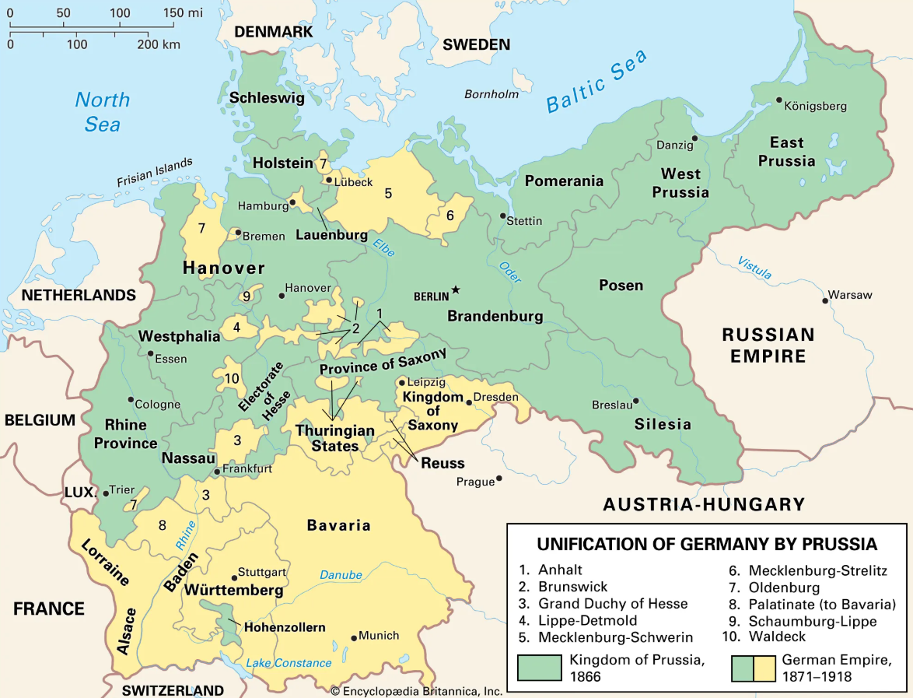

Germany in the 19th century
Early 1800s – Fragmented States and Napoleonic Wars
At the start of the century, “Germany” was not a unified nation but a patchwork of over 300 states within the Holy Roman Empire. The Napoleonic Wars (1803–1815) brought dramatic changes:
- 1806 – Napoleon dissolved the Holy Roman Empire, creating the Confederation of the Rhine under French influence.
- Many German territories were reorganized, modernized, and exposed to new administrative and legal systems (like the Napoleonic Code).
1815 – The Congress of Vienna and the German Confederation
After Napoleon’s defeat, the Congress of Vienna established the German Confederation (39 states), led by Austria.
- It was a loose political association with no central government, aimed at preserving the status quo.
- Austria and Prussia emerged as the dominant powers.
1820s–1830s – Economic and Cultural Shifts
- The Industrial Revolution began to reach German states, especially in textile and steel industries in the Rhineland and Saxony.
- In 1834, the Zollverein (Customs Union) was founded under Prussian leadership, eliminating tariffs between member states and boosting economic integration.
1848 – Revolutions of 1848
- Inspired by liberal and nationalist movements across Europe, uprisings erupted demanding constitutions, civil rights, and German unification.
- The Frankfurt Parliament tried to create a unified Germany under a constitutional monarchy, but failed when the Prussian king refused the crown.
- The revolutions collapsed, restoring conservative dominance.
Mid-Century – Prussia vs. Austria
- Growing rivalry between Prussia and Austria shaped German politics.
- Prussia modernized its army and expanded railways, strengthening its economic and military position.
1860s – Wars of Unification
Under Otto von Bismarck, Prussia used strategic wars to unify Germany:
- Danish War (1864) – Prussia and Austria defeated Denmark and took Schleswig and Holstein.
- Austro-Prussian War (1866) – Prussia’s victory led to the North German Confederation, excluding Austria.
- Franco-Prussian War (1870–1871) – Victory over France sparked southern German states to join the confederation.
1871 – German Empire Proclaimed
- On January 18, 1871, in the Hall of Mirrors at Versailles, King Wilhelm I of Prussia was crowned German Emperor.
- The empire unified most German-speaking states under Prussian dominance.
- This period saw rapid industrialization, scientific advancement, and Germany’s rise as a major European power.